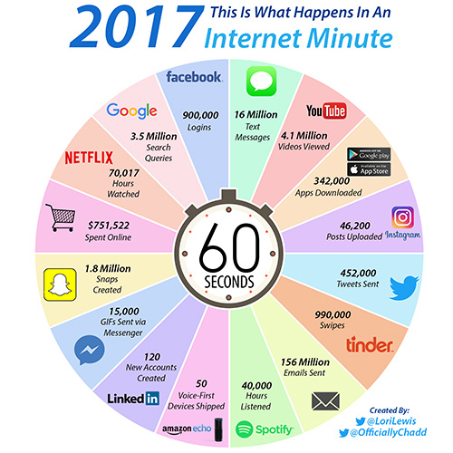

Every Minute the Internet Goes Through an Incredible Amount of Content
By Ivy Zhao
How many apps can you scroll through in 60 seconds? When I’m really in the zone, I can post on Facebook, shoot a text to my friend, like some Instagram photos, and maybe even go through some of my LinkedIn feed. I bet I’m not the only one capable of that digital dexterity. There’s a tremendous amount of activity taking place online, and it seems like there’s always more content to consume.
 To illustrate just how much digital activity takes place every minute, Lori Lewis and Chadd Callahan created an eye-popping graphic. Their wheel demonstrates how hard it can be to keep up with everything going on across the dozens of major platforms that we turn to on a daily basis.
For instance, the collective internet watches 4.1 million YouTube videos every minute, and users post over 46,200 images on Instagram (which must include an absurd amount of brunch photos on Sunday). And if you’re curious about something and head over to Google, you’ll contribute to over 3.5 million searches, which translates to more than 5 billion queries every day.
For marketers, this chart is a good reminder that nobody wants to be bombarded with senseless advertisements, promotional emails, and generic LinkedIn messages. People just don’t have time for a subpar experience with so much digital activity going on around them. You have to produce breakthrough content that provides unique value. And as these platforms continue to grow, the competition for attention will only increase.
So how can content creators win this battle of attention? A strategy is a good place to start—that way you can pinpoint what your audience wants and where they want it. Having a strong voice will always be important, but you’ll have to tweak that voice from platform to platform to maximize your reach. So before you send that carefully crafted email newsletter for thousands to see, think about whether your approach stands out–otherwise you’re just falling in line with the other 156 million people filling up inboxes that minute.